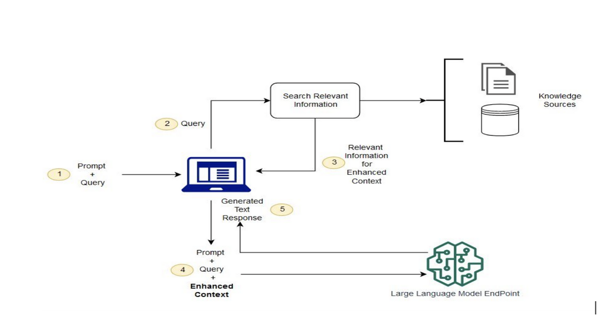
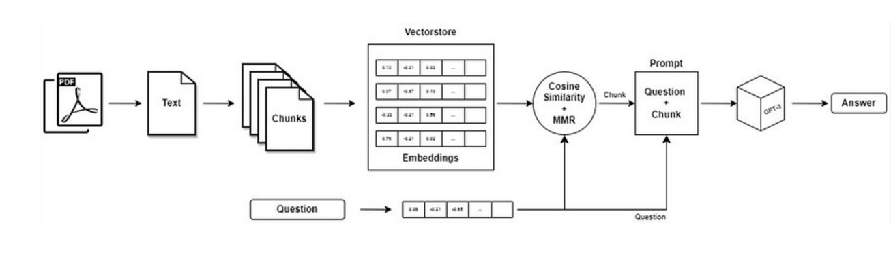

Written Works: Research on LLM, Langchain, and Retrieval Augmented Generation (RAG)
- In this study, I deeply understand the Large Language Models, LangChain, and Retrieval Augmented Generation (RAG). I learned the different problems of inaccuracies in AI chatbots and how RAG proposes a solution.
- Through analyzing AI chatbot accuracies, I learned about critical issues such as hallucination and factuality errors. Hallucination occurs when the model generates outputs that are factually incorrect or unfaithful, producing fluent and coherent text that is nonetheless unreliable for real-world use. Factuality errors happen when the chatbot provides information that contradicts established facts or introduces fabricated details, failing to align with input context or user instructions. Unlike factuality errors, which relate to external correctness, faithfulness focuses on how well the output corresponds to the input.
- Moreover, Poor Calibration taught me that model can experience misalignment between a a model's confidence scores and actual answer correctness. Well-calibrated models assign high confidence to correct answers and low confidence to incorrect ones. Along with, Logical Reasoning and Consistency Errors where LLMs demonstrate proficiency in language fluency but struggle with logical problem structure.
- I also learned how Retrieval Augmentation Generation (RAG) addresses Chatbot Inaccuracies RAG reduces factual contradictions and fabrications by grounding responses in retrieved documents from verified knowledge bases. Instead of relying solely on potentially outdated or incorrect training data, the model accesses current, authoritative sources during inference. Reflecting on this, I realized how RAG’s approach of providing explicit source context enhances accuracy, context consistency, and alignment with user instructions, which is crucial for building reliable AI systems.
- Lastly, the LangChain's Role in RAG I gained a deeper understanding of how LangChain facilitates the implementation of Retrieval-Augmented Generation (RAG) systems. LangChain’s modular framework allowed me to integrate multiple components—document ingestion, embedding, vector storage, retrieval, and prompt orchestration—without the need to manually manage complex interactions between them. By experimenting with different retrievers and prompt chains, I observed how LangChain enables not only basic RAG pipelines but also advanced workflows, such as agentic retrieval and iterative self-refinement. This practical exposure reinforced the significance of grounding LLM outputs in external knowledge, which improved factual accuracy, reduced hallucinations, and increased response faithfulness. Overall, LangChain proved to be an essential tool for both rapid prototyping and rigorous evaluation of RAG systems, highlighting the balance between engineering efficiency and research-focused exploration in building reliable AI chatbots.
- Reflecting on my learning from this study, I realize how the knowledge of LLMs, RAG, and LangChain can significantly shape my future career in AI and software development. Understanding the challenges of chatbot inaccuracies and the strategies to mitigate them equips me with practical skills in building reliable, trustworthy AI systems. This experience also strengthened my problem-solving abilities, particularly in designing data-driven pipelines, integrating modular frameworks, and evaluating system performance. In future roles, whether in AI research, software engineering or data science.
Retrieval Augmented Generation (RAG) Pipeline

LangChain on RAG Pipeline
